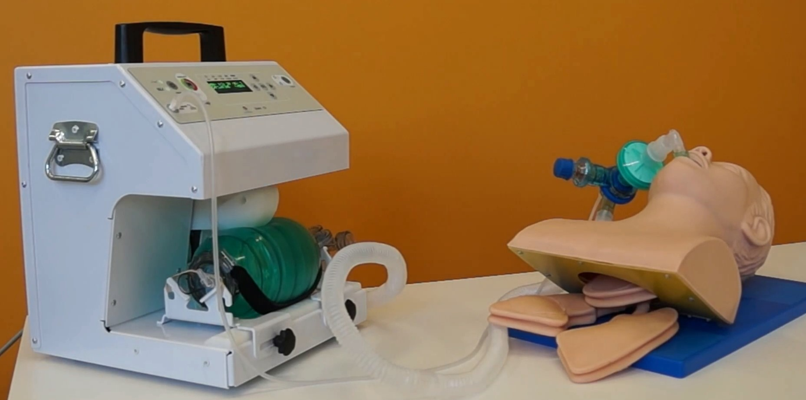
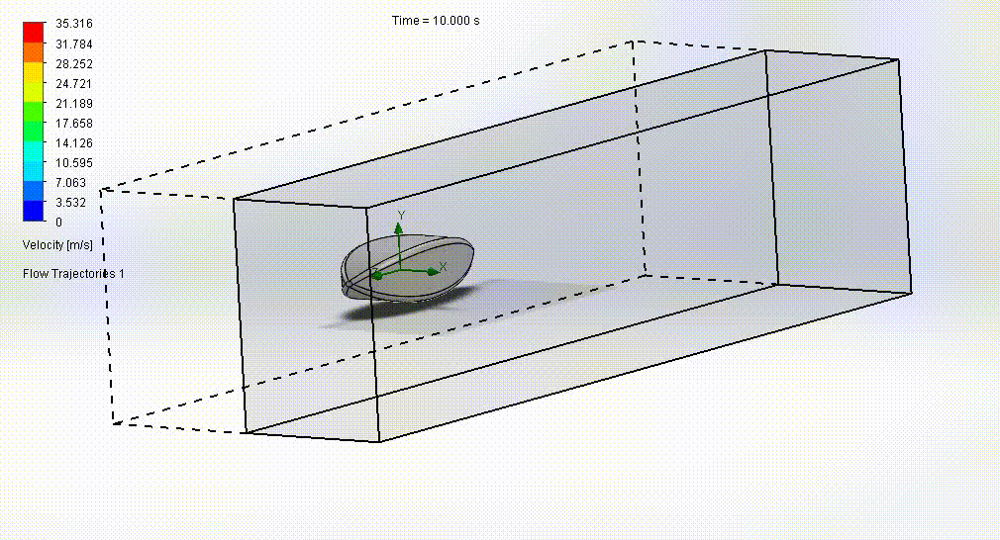
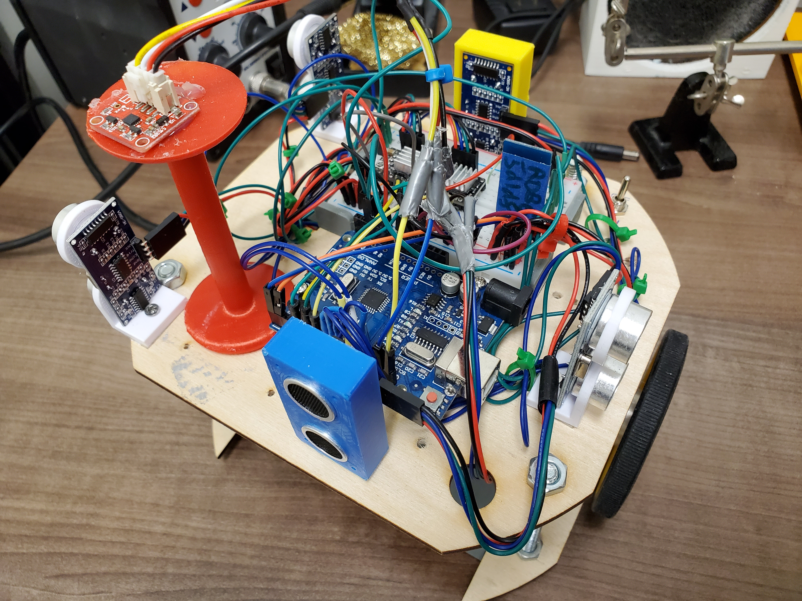

Experience
professional career highlights
ReDeTec
2022-Present
Product Management, Research and Development, Sales Management
I began at ReDeTec as a Mechatronics Research and Development Engineer for our flagship product,
ProtoCycler. ProtoCycler is a 3D-printer plastic recycling machine, and I was responsible for developing
improvements to the technology and testing functionality. My responsibilities grew and my role evolved
into product management.
During this time, I recognized the need for a
sales strategist within the company. I took the opportunity to plunge into
the world of business strategy that had interested me for years. Acknowledging the gap in my formal
education, I prepared by enrolling in MaRS Discovery District's Sales Leadership Excellence cohort,
where I learned best practices from expert advisors and peers in the sales field.
This experience enhanced my professional knowledge and ultimately led to record-breaking sales success
within ReDeTec. I began by building a hygienic pipeline using Pipedrive to organize prospected leads and
outline ideal client profiles. I efficiently shaped my sales strategy by learning the demographics,
methods/timelines of funding, and incentives for purchasing EdTech of K-12 educators in Canada and
globally. I created datasets with KPIs and leading/lagging metrics that indicated which of my sales
efforts performed best so I could further develop my winning strategy. Displaying campaign performance
on dashboards in graphical form enabled my team to visualize and understand progress and encouraged
meaningful discussions between myself, the CEO, and the Board of Directors. By implementing customer
surveys I was able to evaluate and improve my sales process from their critical perspective.
As someone who strives for innovation and improvement, I researched and organized ReDeTec's attendance
at the Future of Education Technology Conference (FETC) in Florida, a first-time event for the company.
While running the booth, I was able to develop relationships with numerous long-term business partners,
demonstrate our product, and build brand recognition with potential customers. The partnerships I
fostered have become major players in ReDeTec's revenue plan.
|  |
 |
Inertia Product Development
2021-2022
Business Strategy, Client Consulting, Mechanical Design
I was involved in a variety of Inertia's business endeavours. I helped develop a low-cost
emergency
ventilator from the ground-up for a company called Ligand Innovation Global. Their goal is to develop a
low-cost ventilator to be used in
resource-limited settings where the only other alternative
would be a human squeezing a CPR bag for hours. A link to their website is here, with a video that
explains the device.
To bring this product to life, I scoped concept feasibility, developed mechanical designs,
built 3D-printed mock-ups and production-BOM prototypes,
performed risk analyses, wrote quality documentation (such as the user manual), as well as executed
verification and validation testing. I created update reports that were presented to the client weekly
and ensured the client's needs were always met.
I then transitioned into management responsibilities, such as maintaining project accounts and managing
project leads, identifying process deficiencies
and creating SOPs to address them, as well as engaging with clients from many projects to ensure their
feedback for the company is captured and acted upon.
Throughout these projects I had also been leading a research study into state-of-the-art technologies
to further the company's knowledge.
Multimatic Technical Centre
2019-2020
Mechanical Design
I performed concept design and mechanism development in my position at Multimatic Technical Centre, a
company that engineers and manufactures automotive components.
My work included building 3D CAD models, performing FEA and topology optimizations, creating and
updating drawings, tolerance stacks and kinematic studies, prototyping and evaluating assemblies, and
designing fixtures for performing tests.
The majority of my work was done in CATIA and NX, using surface modelling, solid parts, and kinematics.
Since Multimatic's projects are confidential, I've included images of public examples of mechanisms
similar to those I designed to give an example of the work I've done.
To show my CATIA skills, I created an automaton of a bird in an egg that peeps out when its cam is
cranked.
The box, cam, and crank were made using solid modelling, and the egg and bird inside were made using
surface modelling.
The mechanism was put together in an assembly and with CATIA's kinematics and simulations functions I
got the parts to move.
I used these skills regularly on MTC's projects.
I learned how to use CATIA and NX at Multimatic Technical Centre, and worked with aluminum, steel and
plastics.
I learned how to conduct DFMEAs, work with the shop employees to build prototypes and then test them in
Instron machines, and to interpret the data I received to optimize my designs.
Overall, I became comfortable in a professional engineering environment and presenting my ideas to major
clients.
University of Toronto's Engineering Outreach Office
2017-2018
Education Technology, Leadership, Finance
In 2017 I worked for U of T's Engineering Outreach Office as a Jr. DEEP Coding
Instructor,
designing and delivering a curriculum for their brand-new children's coding camp on U of T's campus.
I taught the fundamentals of coding like loops, 'if' statements, and computer logic to K-12 students.
To keep the campers engaged and excited I created activities that allowed them to see their code work in
the real world, like building programmable prosthetics.
In 2018 I took on a leadership position on the Engineering Outreach Executive Team as
Materials Lead.
I managed a budget of around $20,000 for the purchasing and organizing of 10,000 individual materials
and processed them for 55 classes throughout the summer.
I also managed 25 instructors for the operation of the Jr. DEEP, Coding, Girls, Math and ENGage Camps.
Working as a Coding Instructor helped me understand the importance of researching and tailoring
information specific to different users, and gave me first hand experience with communicating this
information in ways that would be effective to the users.
It also let me inspire future engineers to keep creating and being innovative, which I'm proud of.
As Materials Lead I learned how to manage a group of people who were managing campers of their own, some
of which who were older than me, and taught me that authentic leadership is the best way to lead.
It also helped me develop excellent organizational and financial skills.
Projects
creativity, innovation, communication
 |
 |
Aerlift
2020-2021
Aerodynamic and Structural Design, Client Consulting
For my fourth-year Capstone project, myself and my team of peers worked with Aerlift, a
company creating a system that delivers crucial medical supplies from urban hospitals to rural
clinics in Rwanda and the Democratic Republic of Congo. We designed the drone that will be delivering
these medical supplies (blood for transfusions,
vaccines, etc.), focusing on aerodynamics and structure while ensuring client needs were met and
maximizing efficiency.
We were supported by the Centre for Global Engineering within the University of Toronto.
The process began with a state-of-the-art analysis, followed by a configuration study for wing
placement, size, and fuselage type.
Through XFLR (a low-fidelity aerodynamic analysis software) calculations, we narrowed the possible
deigns to three plane configurations; conventional, canard, and twin boom.
Further optimization in XFLR and solid modelling in SolidWorks showed us the twin boom had the lowest Cd
(drag coefficient) and Cm (the moment that causes the plane to pitch) at varying angles of attack,
making it the configuration that would become the final design.
Our team received the University of Toronto's John Weber Award for Mechanical Engineering for our work
on this project.
 |
 |
Autonomous Maze-Solving, Payload-Delivering Robot
2020
Mechanical Design, Abstract Problem Solving
In my fourth-year mechatronics course, my team and I designed an autonomous block-delivering,
maze-solving robot.
The robot had to localize within a preset maze and identify the most efficient route to the block
location, without touching any of the walls.
Once the robot's algorithm recognized it was within the block loading zone, it initialized the
blockfinding subroutine.
After an initial 10° ultrasound scan in one direction, the robot turned the opposite way, scanning for
the block in 10° increments until it covered 110°.
Once the block was detected, the robot opened its gripper and brought the block into the payload bay.
The robot's pathfinding and navigation algorithm then guided it to one of three designated dropoff
locations where the block was deposited.
On the mechanical side, I focused on the structural design of the bot, suggesting pivot turning and a
circular footprint with all components within.
This ensured nothing would get snagged on walls in the event of a collision.
I also designed the final grabbing arm, redesigning its attachment to the stepper motor so it was more
stable and twisted less while in use.
I created the final assembly and rendering using SolidWorks, so the physical robot could be manufactured
and built by the teaching team with our laser cut and 3D-printed components.
On the software side, I built MATLAB code for the object avoidance, pathfinding, and payload delivery
algorithms.
Our robot design was chosen by the class to be physically built and tested in the real-world
maze.
Goblin Shark Jaw Kinematic Analysis
2019
Science Communication, Mechanical Design, Exhibit Creation
When creating exhibits for museums, scientific accuracy is only useful if it can be seamlessly
communicated to the guests. For this project, my team and I kinematically modelled the jaw of a Goblin
Shark for use a
fictional science museum exhibit display on deep-sea creatures. When biting, the Goblin Shark extends
its upper and lower jaw out and away
from its body and quickly snaps it around its prey.
To best represent this biological marvel, my kinematic analysis would allow guests in museums to
hand-crank the shark's jaw and experience the "slingshot feeding" mechanism themselves. This aspect of
involvement is crucial to an understanding of scientific concepts, especially for younger guests.
Women in STEM Podcast: Curiocity
2018
Science Communication
My team and I dove into the intricacies of social
media represenation of women in science, technology, engineering and math (STEM) in our podcast,
Curiocity.
We interviewed a woman who's in STEM and active on social media, and had a conversation on the
challenges women face from the public when posting about their lives in their professions.
Exceptional communication not only prevents errors in our work, but opens the door to quality
transferrence of ideas and ensures everyone's voice is heard. I have worked hard for the ability to
translate complex technical concepts into layman's terms so clients and stakeholders can be involved in
discussions in the highest capacity.
I received a Certificate in Communication upon graduation for my work in this field.